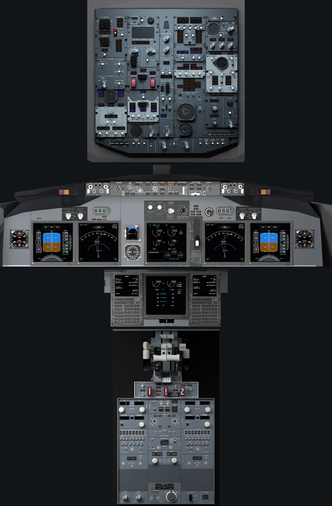

The 737-800 flight deck as it is: overhead panel, glareshield, main instrument panel and control stand, with the system logic behind the switches and lights. Bring the aircraft from cold and dark to the runway, set up the MCP and the CDU, and fly it by hand with the trim or on the autopilot and autothrottle.

Fly with the keyboard, a gamepad or joystick, the touch stick or this pad. The 737 has conventional controls: the column moves the elevator, the aircraft holds the speed it is trimmed for, so trim the stabilizer (Home / End, or the trim wheel) to take the force off. The autopilot trims by itself.
Two transfer buses, each fed by its engine generator, the APU generator or ground power. GEN OFF BUS (blue) means that generator is not powering its bus; TRANSFER BUS OFF and SOURCE OFF (amber) mean the bus has no power. With the battery only on the ground, connect ground power (GRD PWR) or start the APU and put its generators on the buses.
APU switch to START (it springs back to ON); the APU is ready when the APU GEN OFF BUS light comes on. With the APU bleed on and the isolation valve open, engine start switch to GRD, then at 25 % N2 the start lever to IDLE: fuel and ignition, light-off, starter cut-out at 56 % (the switch goes back to OFF). START VALVE OPEN shows on the upper display while the starter runs.
System A (engine 1 pump, electric pump 2) and system B (engine 2 pump, electric pump 1); a LOW PRESSURE light stays on until its pump delivers. Six fuel pumps: forward and aft in each main tank, two in the centre tank; the crossfeed valve joins the left and right manifolds.
N1, SPEED, LVL CHG, VNAV, HDG SEL, LNAV, VOR/LOC, APP, ALT HLD and V/S engage the autothrottle, roll and pitch modes the FMA shows above the attitude: engaged modes in green, armed in white, a box for 10 s after a change. CMD A / B engage the autopilot. The autothrottle moves the thrust levers; push them and it lets you, then takes them back.
Tap either CDU to open it full size. RTE, LEGS, PERF INIT, TAKEOFF REF and APPROACH REF set up the flight; a change to the active route lights EXEC. LNAV follows the route, VNAV the altitude constraints on the LEGS page. Practice-area data: NORDAP field ENRD, runway 36, the fixes of the A320 and King Air sims.
The engine, systems and flight model are teaching models shared with the A320 trainer and tuned to typical 737-800 numbers; CWS, the IRS mode panel (aft overhead), the standby hydraulics, pressurization schedules and the communications panels are pictures only. Our own drawings of the display formats.
| W S · A D or the arrow keys | Column and wheel: nose down and up, roll left and right |
| Home End (or [ ]) | Stabilizer trim: nose down, nose up |
| Q E | Rudder pedals (and nose wheel steering) |
| + − · T · I · R | Thrust levers · TO/GA · idle · reverse (on the ground) |
| F V · G · B | Flap lever down and up · gear lever · brakes while held |
| K J · L | Speed brake out and in · speed brake ARMED |
| Space · Z · P | A/P disconnect · A/T disconnect · pause |
| 1 2 3 … Esc | Overhead, panel, pedestal, MCP, engine displays, CDU · back to the panel |
Training aid, not a certified simulator or a substitute for the aircraft's approved documents. No procedures are included: use your operator's FCOM, QRH and SOP.
Not affiliated with Boeing, CFM or any operator. The flight deck picture is rendered from the FlightGear 737-800YV model (GPL-2.0, see data sources); the display formats are our own drawings. Numbers are typical values for learning.